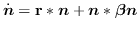

This implements the basic Lotka-Volterra equations:

with  being the reproduction rate and
being the reproduction rate and  being the
interspecies interaction. This is implemented as a single line:
being the
interspecies interaction. This is implemented as a single line:
density += repro_rate * density + (interaction * density) * density;
This command also increments the timestep counter tstep.
An optional argument specifies a number of timesteps to run the
generate step. This improves the speed by amortising the real to
integer conversion operation over a number of timesteps. The downside
is that computation may fail if the problem is ill-conditioned
(offdiagonal elements of  too large with respect to the
diagonal elements).
too large with respect to the
diagonal elements).